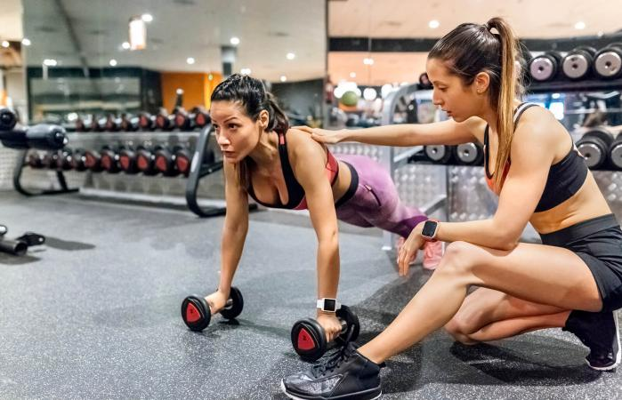

{% extends "base.html" %}
{# Add the title for this page #}
{% block title %}Home{% endblock %}
{% block content %}
Paths
Fashion Management
 Fashion Management is the occupation of organising all non-design components of a fashion business (fashion is not just clothing, it can be any decorative product). It involves the need to understand how to market the product, as well as deciding on what product to source from suppliers, and how much inventory to purchase and when.
Fashion Management is the occupation of organising all non-design components of a fashion business (fashion is not just clothing, it can be any decorative product). It involves the need to understand how to market the product, as well as deciding on what product to source from suppliers, and how much inventory to purchase and when.
Web Development
 Working to develop the design components and the core functionality behind all modern websites and web-based applications. This involves designing and creating basic web pages (e.g. www.wikipedia.com) to complex web apps with lots of data stored (e.g. www.youtube.com) to online platforms with seamless connectivity (e.g. www.whatsapp.com) as well as the Wayfinder webapp you are currently using!
Working to develop the design components and the core functionality behind all modern websites and web-based applications. This involves designing and creating basic web pages (e.g. www.wikipedia.com) to complex web apps with lots of data stored (e.g. www.youtube.com) to online platforms with seamless connectivity (e.g. www.whatsapp.com) as well as the Wayfinder webapp you are currently using!
Game Development
 Working to develop video games. This work can involve creating the different design elements of a game, or working to make sure the game performs and functions just as you would want it to.
Working to develop video games. This work can involve creating the different design elements of a game, or working to make sure the game performs and functions just as you would want it to.
Video games come in many shapes and sizes. They can be small-scale games that you play within a webpage, games that you can play on your mobile, or large-scale games you play on a dedicated console. Video games can also be online platforms (containing a multiplayer aspect) or solely offline pieces of media content.
Matematician
Working to use mathematics to solve many of the world’s problems. This includes working to develop new formulae and mathematical models in an attempt to try and interpret the world, as well as applying proven mathematical models to predict and understand the events that occur around us. For example, mathematics can help us learn more about Space and our Universe, as well help to find treatments for illness here on earth.
Doctor (Medicine)
Working to help save the lives of others. This work is done in many ways. For example, by identifying any relevant condition that a potential patient may have and following up with recommendations of what actions should be taken to help a patient, as well as actually undertaking operating procedures on a patient if necessary. There are a wide variety of roles that Doctors can specialise in, dependent on the body-related area and the type of illness you want to help treat.
Personal Trainer

Working to help give advice and guidance to individuals, on how to stay physically healthy and for them to achieve their body-related goals (e.g. build muscle, lose weight). Typically, you can provide this advice face-to-face, one-to-one with individuals at a physical location (e.g a gym) or you can do it via online channels (e.g. by having your own website).
{% endblock %}